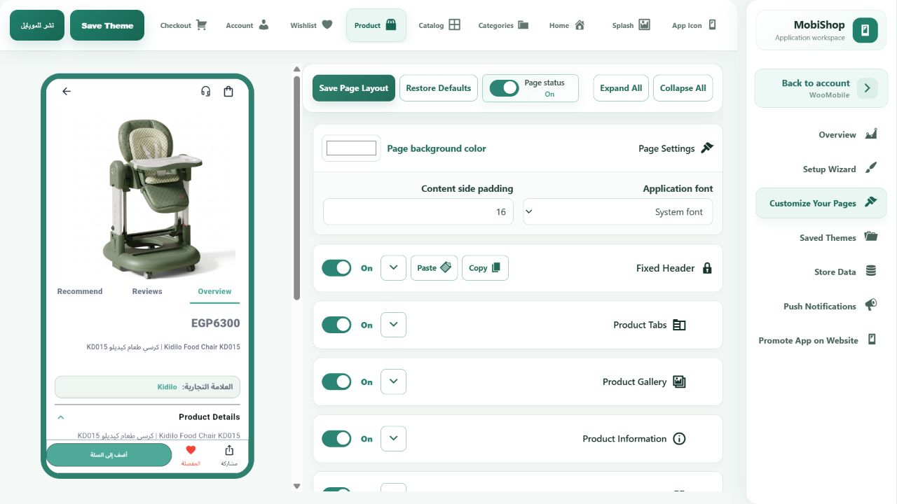

التقرير مفيد كمراجعة للكود، لكنه لم يشغّل التطبيق أو الاختبارات. أرقامه ليست عدد أخطاء تم إثباتها عمليًا. تمت مراجعة النقاط المؤثرة وتصحيح العيوب التي أمكن تأكيدها، مع الحفاظ على تصميم التطبيق وإعدادات المتجر.
التحقق: نجح 585 اختبارًا في المجموعة الموسعة، وتُخطّي اختبار اتصال مباشر يحتاج إعدادات مستقلة. نجح أيضًا اختبارا صلاحيات إضافيان. تحليل الملفات المعدّلة وبناء البرفيو نجحا. لم ننشئ عملية دفع أو طلبًا حقيقيًا، ولم نحدّث نسخة الهاتف المثبّتة في هذه الدفعة.
المفضلة تحفظ على الجهاز لكل متجر؛ المزامنة بين أجهزة العميل ليست ضمن هذا الإصلاح. لم تُعتبر كل بنود التقرير الـ352 أخطاء مثبتة أو محلولة.
| R7-01 | WooCommerce image IDs awaiting URL resolution could reject the category tree. Retain the live category image while the saved image is unresolved. Other platforms and explicit URLs retain validation.category_overrides83_test.dart |
| R3-01 / HOME-1; R3-03 / HOME-2 | Malformed product source or duplicate block IDs could break home rendering. Normalize optional source strings and keep the first valid section per ID while retaining later valid sections.home_layout_model_test.dart; malformed source reproduced before fix |
| AUTH-1 | A temporary secure-storage read failure prevented session initialization. Return an unauthenticated state without deleting the saved session; a later restoration or sign-in can proceed.auth_repository_impl_test.dart; reproduced before fix |
| R1-01 / AUTH-3 | Google SDK initialization cached a rejected future. Clear failed initialization so the next explicit attempt can recover.google_initialization_retry_test.dart; real backend with a fake platform implementation |
| C1 | Two checkout callbacks could run while address synchronization preceded submission. Guard the full active submission, including address synchronization.checkout_screen_test.dart; two callbacks result in one submission and one continuation |
| C5 | An old cart refresh could overwrite a newer quantity mutation. Discard refresh results from before the latest accepted mutation.cart_controller_test.dart; reproduced before fix |
| GAP-1; GAP-2 | Shopify pre-dispatch bootstrap and hydration failures could permanently block later attempts. Distinguish a failure before dispatch from an ambiguous server write; retry failed storage hydration. Ambiguous dispatched writes remain protected against duplicate creation.shopify_cart_recovery_test.dart; shopify_checkout_policy297_test.dart |
| CHK-2 | One immediate read after the card SDK callback could miss delayed server settlement. Poll only the same authenticated order up to six times with bounded delays; never re-submit a charge or create another order. Stop on terminal status or changed customer.native_payment92_test.dart; native_inline95_test.dart |
| C6 / CHK-5 | A profile-only auth update could recreate the payment controller. Observe customer identity and token rather than the entire profile object.checkout and payment regression suites; no new real transaction |
| O1 / ORD-2 | The client invented cancellation permission from processing/on-hold status. Use the server cancellation capability and preserve its explicit cancel/request type.customer_orders_repository_impl_test.dart; negative permission plus both positive action types |
| WISH-1; W2 / WISH-3 / WISH-5 / WISH-6 | Some product-card hearts bypassed the shared wishlist mutation queue. Use the same repository and serialized updates, broadcast successful changes, ignore stale loads, and show a save error without falsely filling the heart.product_wishlist_button_test.dart; rapid independent hearts, shared removals, failed save then retry |
| Additional current-source defect | Two saved-address labels contained non-UTF-8 bytes. Restore the existing Arabic text in UTF-8 without changing styling.Analyzer and checkout widget tests |
| W1 / WISH-2 | Current wishlist controller no longer prunes saved IDs because a catalog response is incomplete; prior regression tests passed again. |
| C3 / CHK-1 | Saved-address switching already recreates form values and clears optional values. The old fallback postcode field was removed. This does not certify every country-specific storefront configuration. |
| GAP-7 | The current web shell leaves wheel/touch handling to Flutter; the old self-posted wheel handler cited by the report is no longer the active implementation. |
| GAP-5 | Shopify policy tests already existed; repository recovery and buyer-session tests were added. This is not full coverage of every Shopify repository branch. |
| AUTH-2; ACC-1; PROD-2; ORD-1 | Forgot-password/account deletion/full reviews/new order detail experiences require new features, APIs or UI. Excluded from this design-preserving reliability patch. |
| R1-06; PROD-3 | Default support destinations and configured fit-summary content need store/product decisions; no invented contact data or visible content changes were applied. |
| R4-04 / PROD-1 | Variation-selection constraints need a dedicated availability/navigation design decision and regression matrix. Existing variation behavior was retained. |
| B2 / BUN-1 | Atomic multi-item bundle addition/rollback is not provided by the existing sequential flow; a repository/server contract change is required. Not fixed by pretending that partial writes can safely be replayed. |
| CAT-5 | Some platform-specific filtering is unsupported. Hiding or redesigning filters was excluded from this patch; a separate capability-aware change remains. |
| SPL-1 | The current startup design intentionally waits for validated branding/configuration with retry. Bypassing that contract was not treated as a safe bug fix. |
| Other report entries | No claim that all lower-priority entries were reproduced or fixed. Broad refactors, SDK upgrades, design changes and new features were excluded. |
تم تفعيل البرفيو الجديد بعد مراجعته، مع نسخة رجوع وحفظ تعديلات المشروع الأخرى. ظهر زر جوجل، واختفى تبويب المراجعات عند إيقافها ورجع عند تشغيلها. ظهرت أقسام الرئيسية، ونجح الانتقال بينها أكثر من مرة. الإصلاحات محفوظة في الكود؛ التطبيقات المثبتة تحتاج بناء نسخة جديدة لاستقبالها.
